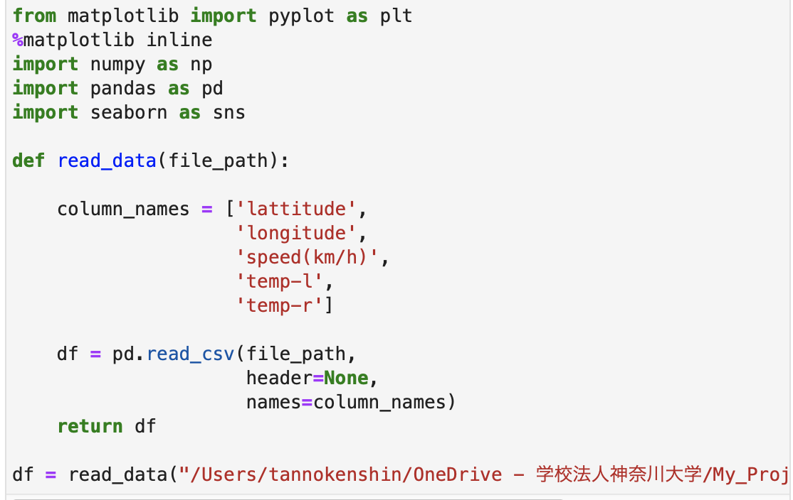
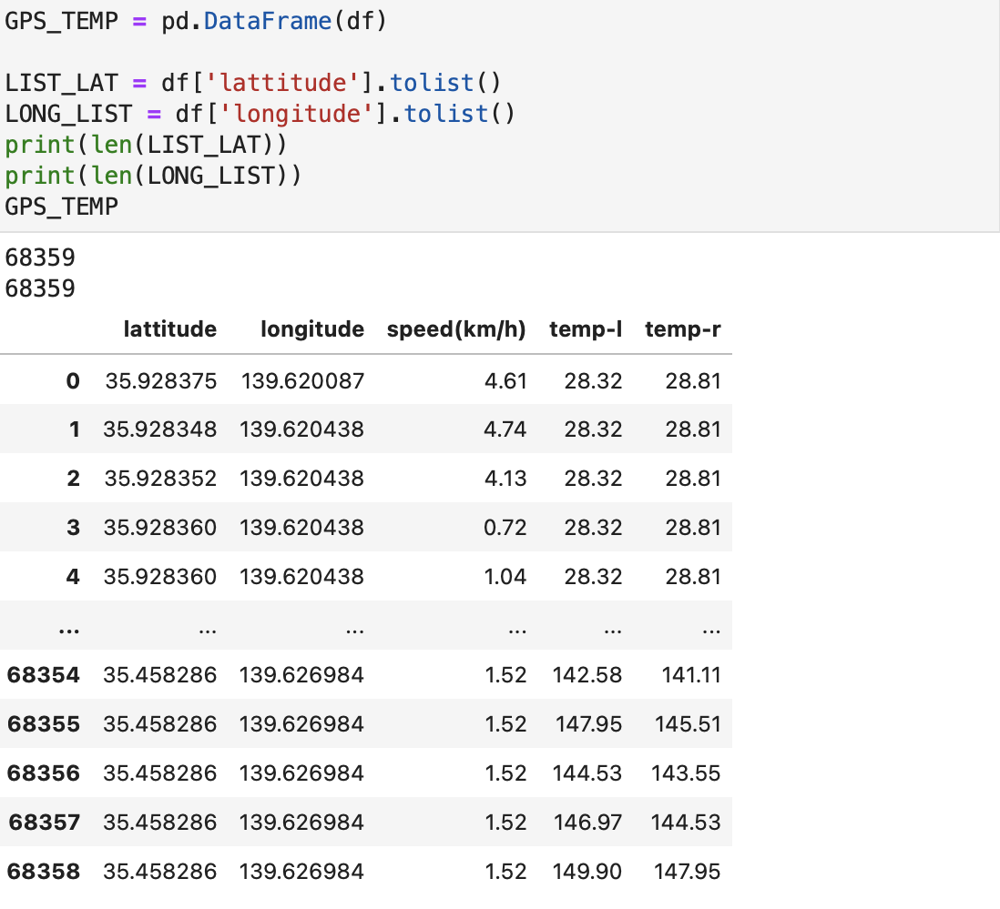
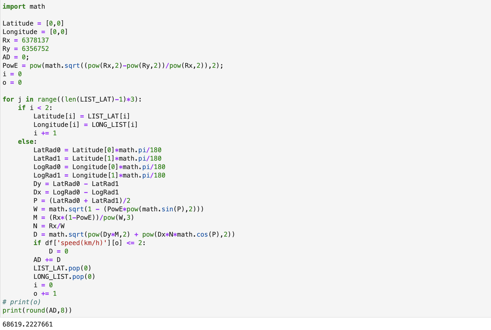

Hello!
・家からキャンパス間を、GPS計測してみました。
・その計測したデータをヒュベニの公式に当てはめて距離を算出しました。
・その結果は正確なのか？
・Macbook pro
・jupyter lab
①

②

③

①必要なモジュールをインポート
from matplotlib import pyplot as plt
%matplotlib inline
import numpy as np
import pandas as pd
import seaborn as sns
②読み込みたいデータのパスを記述
df = read_data("/Users/...")
③ファンクションでデータを編集
def read_data(file_path):
column_names = ['lattitude',
'longitude',
'speed(km/h)',
'temp-l',
'temp-r']
df = pd.read_csv(file_path,
header=None,
names=column_names)
return df
①データフレームへ
GPS_TEMP = pd.DataFrame(df)
②リストへ
LIST_LAT = df['lattitude'].tolist()
LONG_LIST = df['longitude'].tolist()
①インポート＆変数用意
import math
Latitude = [0,0]
Longitude = [0,0]
Rx = 6378137
Ry = 6356752
AD = 0;
PowE = pow(math.sqrt((pow(Rx,2)-pow(Ry,2))/pow(Rx,2)),2);
i = 0
②forとifでデータをひとつずつ箱に格納
for j in range((len(LIST_LAT)-1)*3):
if i < 2:
Latitude[i] = LIST_LAT[i]
Longitude[i] = LONG_LIST[i]
i += 1
③elseで計算＆変数リセット
else:
LatRad0 = Latitude[0]*math.pi/180
LatRad1 = Latitude[1]*math.pi/180
LogRad0 = Longitude[0]*math.pi/180
LogRad1 = Longitude[1]*math.pi/180
Dy = LatRad0 - LatRad1
Dx = LogRad0 - LogRad1
P = (LatRad0 + LatRad1)/2
W = math.sqrt(1 - (PowE*pow(math.sin(P),2)))
M = (Rx*(1-PowE))/pow(W,3)
N = Rx/W
D = math.sqrt(pow(Dy*M,2) + pow(Dx*N*math.cos(P),2))
if df['speed(km/h)'][o] <= 2: ←ここでノイズを除去しているためここは非常に重要
D = 0
AD += D
LIST_LAT.pop(0)
LONG_LIST.pop(0)
i = 0
④結果をプリント
print(round(AD,8))
・ヒュベニの公式を使用した距離測定の結果は、
68.6km
になりました。
・最寄りから横浜までの距離は、
65.9km
。
・家から駅と駅からキャンパスの距離は、
2km
。
・そのため実際の距離は、
約67.9km
となり、ほぼほぼ正確であると言えると思います。
・ノイズを除去する数値を上げたり下げたりすることによって、
より正確に出せる可能性があるので、とても良い公式であると思います。
Fin.